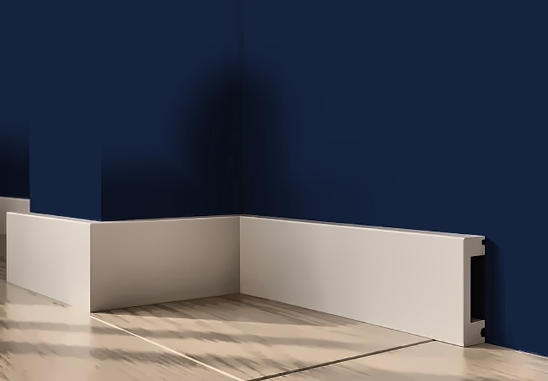
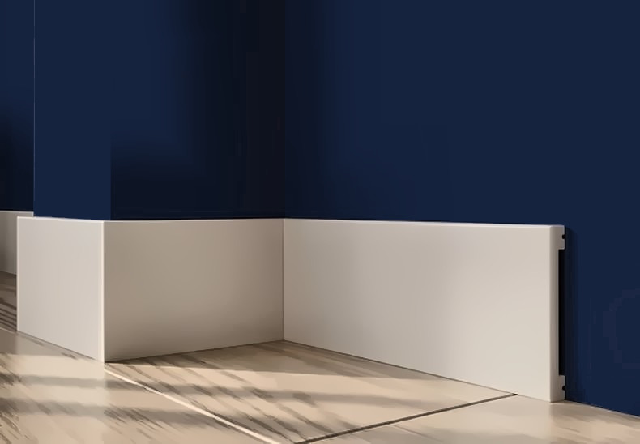
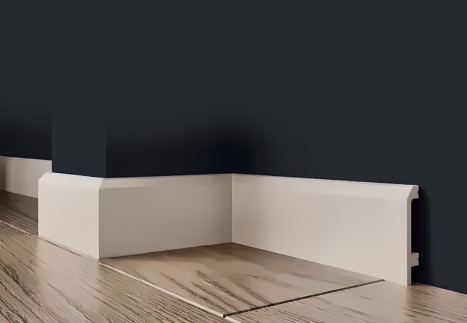
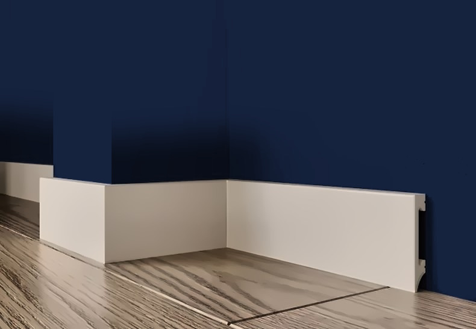
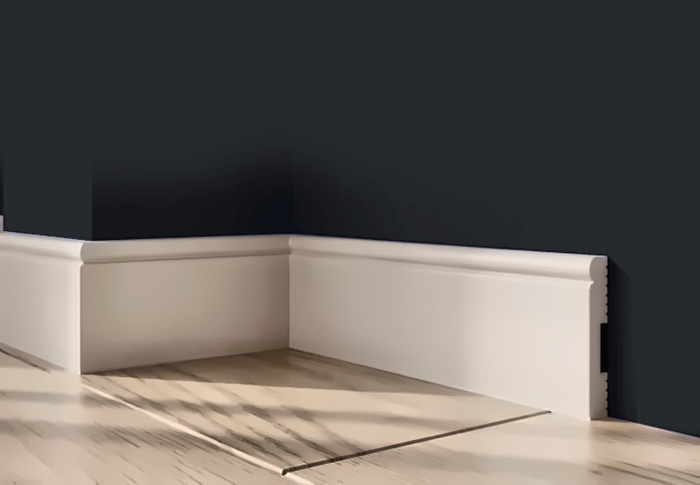
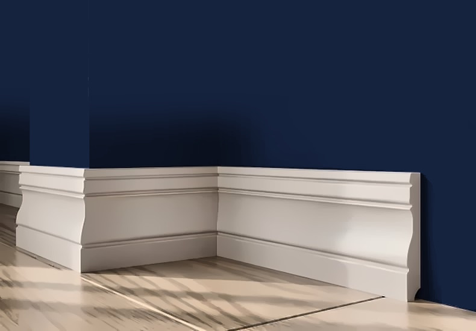
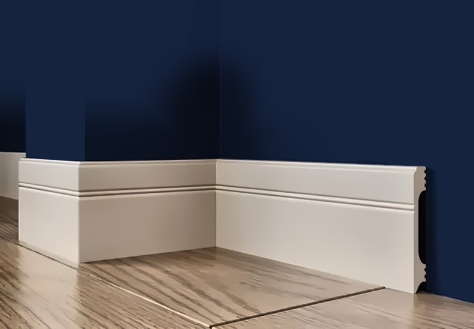

Плинтус напольный из дюрополимера — белый, под покраску, высота 65–150 мм
Напольные плинтусы из дюрополимера (полистирола высокой плотности) под покраску: высота от 65 до 150 мм, длина 2 м. Плотный материал не крошится и не боится влажной уборки, красится в цвет стен или дверей. Модели A11-80, A11-100 и A12-100 — с пазом под LED-ленту (плинтус с подсветкой). Монтаж на клей, углы под 45°. Цены от 400 ₽ за штуку — дешевле аналогов из дюрополимера.















Цены предварительные, за штуку, без НДС. Нажмите на товар — там фото, 3D, профиль, размеры, цена и заявка.
Вопросы и ответы
Что такое плинтус из дюрополимера?
Дюрополимер — полистирол высокой плотности. Плинтус из него плотный и ровный, не крошится как пенопласт, не боится влажной уборки, красится любой краской для стен.
Как крепить напольный плинтус?
На монтажный клей (жидкие гвозди на водной основе) к стене; углы запиливаются под 45° в стусле, стыки шпаклюются и красятся.
Какую высоту плинтуса выбрать?
Под потолок 2,5 м обычно берут 65–80 мм, под 2,7–3 м — 100 мм и выше (A701, A704, A707, A004 119 мм, A702 150 мм).
Есть ли плинтус с подсветкой и с кабель-каналом?
С пазом под LED-ленту — A11-80, A11-100, A12-100. Кабель-канал есть у молдингов A35/2 и A157/2; у плинтусов провод прячется за полостью профиля.
Сколько плинтуса нужно?
Периметр комнаты без дверных проёмов ÷ 2 м, плюс 10 % на подрезку; в коробке от 10 до 48 шт в зависимости от модели.
Заявка
Ответим с ценой, наличием и сроком в рабочее время. Удобнее всего — позвонить +7 999 204-10-47 или написать в Telegram @IuliiaUsenko.